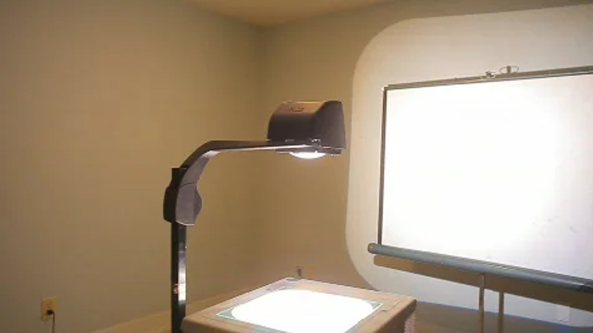

Convert odia spoken language into odia written text. Usecases/Applications include:
Digital Documentation & Governance: Convert meetings, public addresses, and administrative discussions into text for official records and accessibility.
Transcribing court proceedings for the Odisha High Court: Enable citizens to file complaints verbally in Odia over call/phone, which are transcribed and processed digitally for faster resolution.
Judiciary & Law Enforcement: Transcribe FIRs, court proceedings, and witness statements to streamline legal and police documentation.
Automated Complaint & Grievance Handling: Enhance judicial transparency by converting spoken trials into searchable text records.
Documenting public hearings for environmental clearances: Capture and store spoken feedback during public consultations for future reference.
Recording Panchayat meetings for policy review: Automatically transcribe rural governance discussions to aid in decision-making processes.
Logging police radio communications for law enforcement: Ensure accurate documentation of police interactions for evidence and operational tracking.
Capturing citizen grievances during public interactions: Enable automated recording and tracking of complaints voiced during public events.
Translating rural community discussions into text for analysis: Facilitate data-driven policymaking by documenting oral inputs from local communities.
Recording and archiving Assembly debates: Preserve legislative history by converting spoken debates into organized digital archives.
Documenting emergency response communications: Enhance disaster management by transcribing real-time spoken updates for swift action.
Tracking field reports from health workers in rural Odisha: Improve healthcare data accuracy by converting spoken field reports into text.
Improving accessibility for the visually and hearing impaired: Provide text-based access to spoken government announcements and public addresses.
Convert written odia text into natural-sounding odia sperson speaking odia speech. Usecases/Applications include:
Citizen Service Accessibility: Convert government notices, policies, and welfare schemes into Odia speech for visually impaired and rural citizens on their dialect/language.
Education & E-Governance: Enable voice-based learning for students, especially in rural schools, and provide voice-guided government services.
Automated public service announcements in Odia: Deliver real-time, multilingual audio messages to inform citizens about services and emergencies.
Broadcasting weather updates to coastal communities: Ensure timely dissemination of cyclone warnings and weather alerts in regional languages.
Providing audio versions of government circulars: Improve accessibility by converting official notices into speech for the visually impaired.
Delivering health advisories to remote areas: Share critical health-related messages through audio broadcasts in underserved regions.
Informing farmers about agricultural schemes: Communicate government subsidies and best practices to farmers in their native languages.
Reading exam results for visually impaired students: Offer accessible exam results by converting academic data into audio formats.
Guiding citizens through online service portals: Provide voice-guided assistance for navigating digital public services and e-governance platforms.
Automating railway and bus station announcements: Enhance commuter convenience with automated multilingual announcements at transport hubs.
Providing multilingual election-related information: Ensure voter participation by offering audio guides on electoral processes in local dialects.
Enabling voice-based access to land records: Allow rural citizens to retrieve property information through speech-enabled systems.
Empowering Citizens - Enhancing Accessibility - Bridging the Digital Divide
Neural Machine Translation (NMT)
Translate English text to Odia text and vice versa. Usecases/Applications include:
Cross-State Administrative Communication: Facilitate smooth coordination between Odisha and central/state governments by translating official documents and correspondences.
Judiciary & Legal Assistance: Enable real-time translation of case summaries, court orders, and FIRs to help citizens and legal professionals.
Multilingual Governance & Policy Accessibility: Translate government policies, circulars, and legal documents into Odia and other regional languages for better accessibility.
Translating government documents into Odia and tribal languages: Ensure inclusive communication by providing official materials in native languages.
Facilitating communication between tribal communities and authorities: Bridge language gaps by translating official communications into tribal dialects.
Providing Odia translations of central government policies: Localize national schemes and policies for better understanding among Odisha’s citizens.
Assisting in multilingual legal proceedings: Support fair hearings by translating legal arguments and judgments into multiple languages.
Enabling access to educational content in regional languages: Translate textbooks and academic resources to promote learning in local dialects.
Translating health care information for rural outreach: Improve public health by providing translated medical guidelines in regional languages.
Supporting disaster management communication across languages: Ensure accurate and timely communication during emergencies across linguistic boundaries.
Translating election materials for local dissemination: Facilitate voter engagement by offering election guides in multiple languages.
Converting agricultural best practices into local dialects: Disseminate farming knowledge to rural Odisha in comprehensible local languages.
Facilitating multilingual interactions in government offices: Enhance citizen engagement by providing on-the-fly translation for public services.
Extract Odia text from images and scanned documents. Usecases/Applications include:
Enable seamless translation of FIRs, crime reports, and notices, improving inter-agency coordination and public awareness.
Make agricultural policies, crop advisories, and subsidy schemes available in multiple languages, supporting farmers and rural communities.
Instantly scan and translate case summaries, court orders, and judgments, ensuring legal information is accessible to all.
Digitizing historical land records in Odisha: Preserve and streamline access to ancient land documents through digital archiving.
Processing scanned birth and death certificates: Automate extraction of vital data to enhance citizen service delivery.
Extracting information from rural health reports: Improve public health tracking by digitizing handwritten medical records.
Archiving old government notices and circulars: Enable digital access to legacy documents for research and administrative purposes.
Digitizing handwritten forms from public services: Modernize service delivery by converting manual forms into searchable databases.
Processing legal documents for judiciary archives: Enhance legal transparency by digitizing court records and legal submissions.
Extracting data from survey maps and cadastral records: Facilitate accurate land management by digitizing geospatial records.
Digitizing vehicle registration records: Automate data extraction from physical vehicle documentation for efficiency.
Automating data extraction from scanned tax receipts: Improve revenue tracking by digitizing and processing tax documents.
Converting handwritten applications to digital formats: Expedite public service applications through automated digitization.
Virtual Voice Conversational Bot
Chat Bot
Open Office - Odia Word Software
Low Space Teaching - Recorder Model

The storage size of generated educational content will be minimal, ensuring efficient use of government resources. Citizens and learners will also be able to share the content easily.